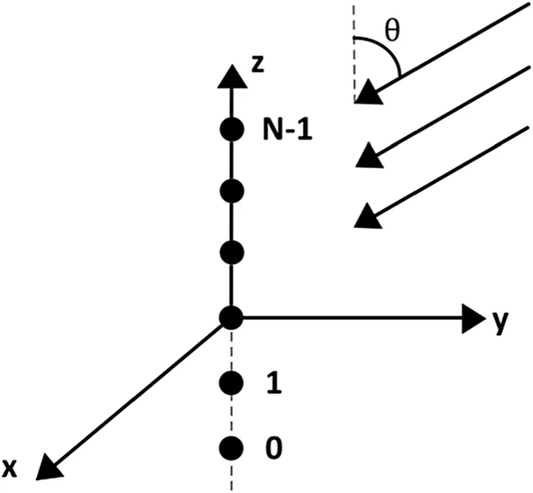
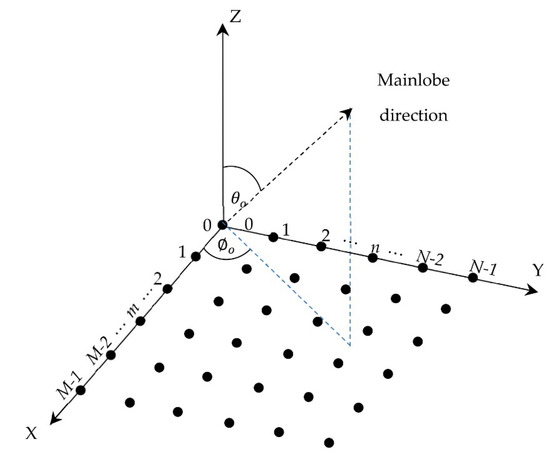

CÔNG CỤ TÍNH TOÁN ARRAY FACTOR
Khảo sát đặc đồ bức xạ không gian của các mảng anten quy mô lớn. Tùy chọn mô hình linear hoặc planar.
Mảng Anten Tuyến Tính Đều (Uniform Linear Array - ULA)
Mảng ULA gồm N phần tử xếp thành một hàng dọc (thường đặt theo trục Z), cách đều nhau khoảng d. Độ lớn Array Factor (AF) chuẩn hóa được tính bằng:
$$ |AF| = \left| \frac{\sin\left(\frac{N\psi}{2}\right)}{N\sin\left(\frac{\psi}{2}\right)} \right| $$Trong đó, Ψ là tổng độ lệch pha giữa hai phần tử liên tiếp, phụ thuộc vào góc quan sát θ và góc kích thích pha điện tử α (dùng để bẻ tia - Beam steering):
$$ \psi = \frac{2\pi}{\lambda} d \cos(\theta) + \alpha $$
Thông số Mảng Anten 1 chiều (ULA)
Giá trị Array Factor chuẩn hóa tại θ = 90°: -
Hệ số hướng tính (Directivity): -
Độ rộng búp sóng nửa công suất (HPBW): -
Độ rộng búp sóng giữa 2 điểm không (FNBW): -
Mảng Anten Phẳng Đều (Uniform Planar Array - UPA)
Mảng UPA là sự kết hợp của hai mảng tuyến tính đặt vuông góc với nhau trên mặt phẳng X-Y (tạo thành ma trận \(N_x\) x \(N_y\)). Array Factor tổng hợp chính là tích của hai AF thành phần dọc theo trục X và trục Y:
$$ |AF_{UPA}| = |AF_x| \times |AF_y| $$Vì mảng nằm trên mặt phẳng X-Y, hướng bức xạ cực đại tự nhiên (Broadside) sẽ hướng thẳng đứng theo trục Z. Độ lệch pha thành phần dọc theo mỗi trục phụ thuộc vào cả góc tà θ và góc phương vị ϕ:
$$ \psi_x = \frac{2\pi}{\lambda} d_x \sin(\theta)\cos(\phi) + \beta_x $$ $$ \psi_y = \frac{2\pi}{\lambda} d_y \sin(\theta)\sin(\phi) + \beta_y $$
Thông số Mảng Anten Phẳng (UPA - Lưới \(N_x\) x \(N_y\))
Giá trị AF chuẩn hóa tại (θ = 0°, ϕ = 0°): -
Hệ số hướng tính (Directivity cực đại): -
HPBW_x ~ -
FNBW_x ~ -
HPBW_y ~ -
FNBW_y ~ -